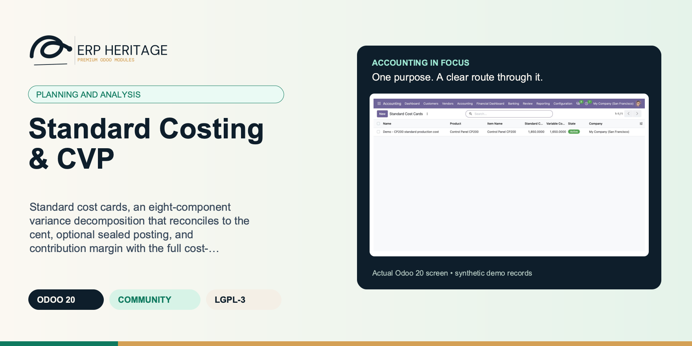
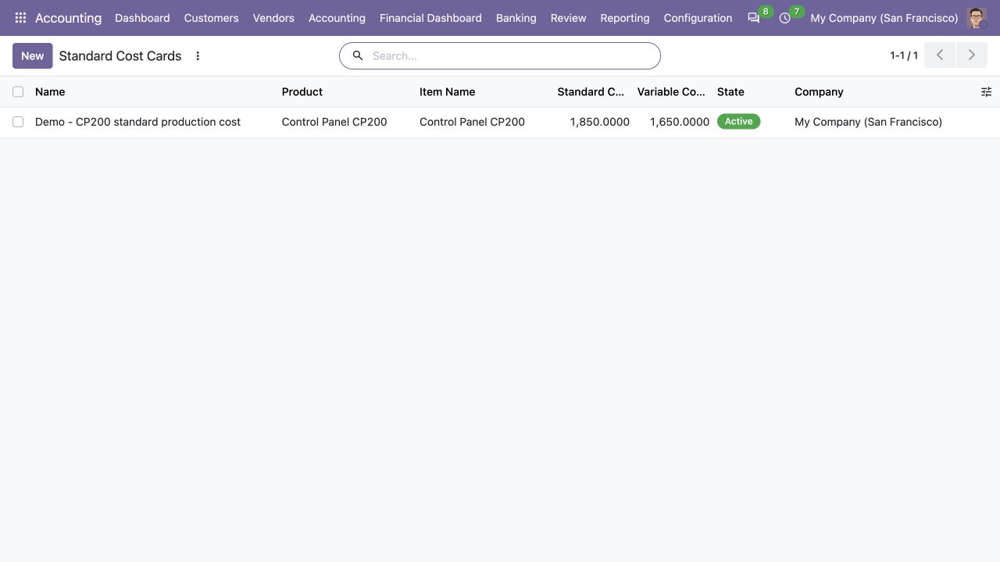
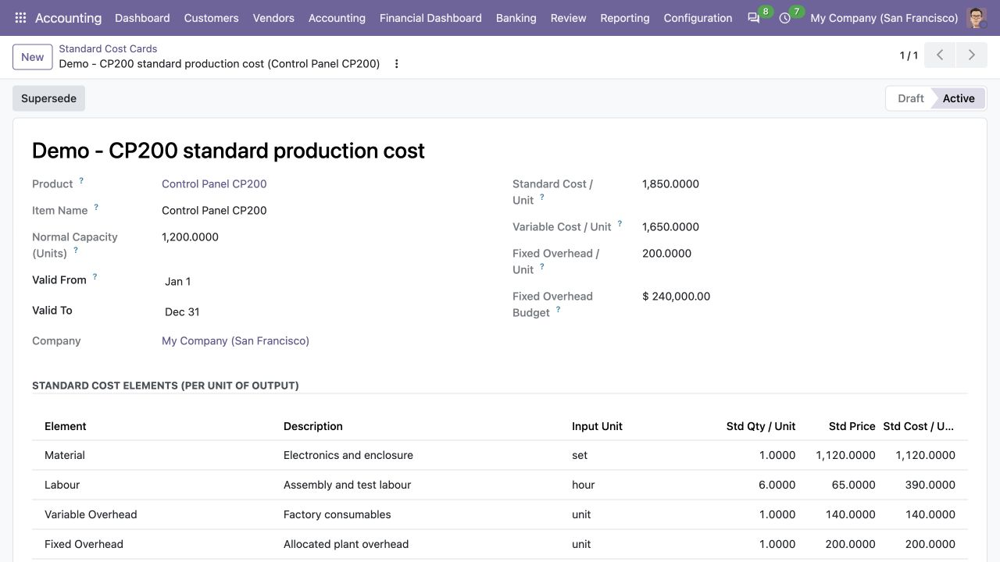
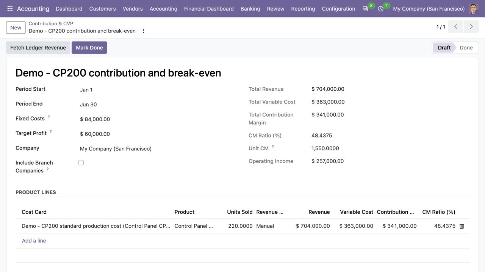

ERP HERITAGE / ODOO 20 COMMUNITY
Standard cost cards, an eight-component variance decomposition that reconciles to the cent, optional sealed posting, and contribution margin with the full cost-volume-profit set. Analysis first, ledger only when you ask for it.
LGPL-3 · Odoo 20 · v20.0.1.0.7 · Module guide, setup, workflows and rollout checks
The purpose
A management accounting layer for Odoo 20 Community. Standard cost cards hold the per-unit standard quantity and price of each cost element (material, labour, variable overhead, fixed overhead) for a product or free-form item, with one active card per product enforced. Period actuals capture the units produced and the total input quantity and cost per element. The variance run decomposes the difference between actual cost and standard cost absorbed into the full two-way variance set: material price and usage, labour rate and efficiency, variable overhead spend and efficiency, fixed overhead spend and volume, with a favourable-negative sign convention and a reconciliation identity (the variance lines always sum exactly to total actual cost minus total standard cost absorbed) enforced by constraint. Posting is optional and off by default: in analysis-only mode nothing touches the ledger; with posting enabled the run books the variance set as one balanced, sealed journal entry against per-kind variance accounts and an absorption account. The contribution report computes contribution margin per product from the standard variable cost, picks up revenue manually or from posted invoice lines, and derives the CVP set: break-even units and revenue, target-profit units, margin of safety and degree of operating leverage. Inventory valuation integration with stock moves is documented as a later wave; this release is deliberately ledger-independent on the input side so it fits any inventory setup. Posting is gated to the EH Accounting Manager group and every generated journal entry is sealed against edit.
Inside Odoo 20
Captured from Odoo 20 Community using synthetic demonstration records. Configuration screens show the available workflow; external service connectivity still requires the relevant provider setup and validation.

Active standard cost card register compares total and variable unit costs.
Captured 2026-09-22 from isolated Odoo 20 Community database with synthetic demonstration records. No external submission or live banking activity is represented.

Active production cost card itemizes material, labour, variable overhead and allocated fixed overhead.
Captured 2026-09-22 from isolated Odoo 20 Community database with synthetic demonstration records. No external submission or live banking activity is represented.

Draft contribution workpaper calculates margin and operating income from explicitly manual sales inputs.
Captured 2026-09-22 from isolated Odoo 20 Community database with synthetic demonstration records. No external submission or live banking activity is represented.
Inside this module
The variance run splits the total cost variance into material price and usage, labour rate and efficiency, variable overhead spend and efficiency, and fixed overhead spend and volume. Because each element's two variances telescope, the eight lines always sum exactly to total actual cost minus total standard cost absorbed, and that identity is enforced by constraint.
Posting is off by default. In analysis-only mode nothing touches the general ledger, so the module fits any inventory setup. Enable Post Variances and the run books the whole variance set as one balanced, sealed journal entry against per-kind variance accounts with an absorption account carrying the balancing leg.
The contribution report reads the standard variable cost off the card, takes revenue manually or from posted invoice lines, and derives break-even units and revenue, target-profit units, margin of safety and the degree of operating leverage in one documented pass.
The lines are engine output, never keyed. A manual line or edit would break the identity, so a constraint re-verifies that the variances sum to actual minus absorbed on any write outside the engine, and lines under a posted run are frozen.
A card freezes when it activates. Editing the product, capacity or an element line in place is blocked, because variance runs and contribution reports already reference the standard. A revision is a new card, and activating it supersedes the old one automatically.
Only one active standard cost card per product and company is allowed, enforced by constraint. Activation supersedes the prior active card, so a run can never quietly pick the wrong standard.
Break-even projections require positive sales volume and contribution. A loss-making mix is labelled as having no break-even and negative pseudo-projections are suppressed, while exact aggregate figures—not a rounded display ratio—drive break-even revenue.
A posted run cannot be deleted, re-keyed to another state or cancelled; the move link uses restrict ondelete, so the sealed variance entry always stays reconcilable to the run behind it.
From input to outcome
Agree the standard cost elements and units before entering the period’s actual input quantities and costs. Gather standard cost cards, input quantities and rates, production actuals, revenue and optional variance accounts. Use a representative case with a known expected result so the team can separate configuration decisions from unexpected behaviour. Keep the supporting commercial or accounting evidence available during review.
Compute the variance run and inspect the full decomposition and its reconciliation to total actual cost less absorbed standard cost. Follow the record’s available actions in the order intended by the workflow. Review the selected company, relevant dates and any validation messages before continuing. If the source data changes, reassess the result against the updated evidence.
You build a standard cost card for the product, one line per element with the standard quantity per unit and the standard price, set the normal capacity that budgets fixed overhead, and activate it, which freezes the standard so every later analysis reads the same figures. Each period you capture the actuals, the units produced and the total input quantity and cost per element, then run the variance decomposition. The eight lines appear with a favourable-negative sign convention and reconcile to actual minus absorbed. If you want it on the books you enable posting and the set books as one sealed entry. Separately you complete a contribution report for the period and read break-even, margin of safety and operating leverage straight off it.
Use contribution and CVP calculations to evaluate the entered price, volume and cost assumptions, keeping analysis separate from optional posting. Compare the outcome with the expected treatment for this case and record the reason for any difference that requires follow-up. Give exceptions an owner so they do not disappear inside a period-end spreadsheet.
Make the business owner responsible for assumptions and data collection; the module is not an automatic replacement for stock valuation or production capture. Include the accepted operating example, configuration choices and unresolved dependencies in the handover. Review them when business policy, source data or the surrounding Odoo applications change.
Business situations
Standard Costing & CVP is relevant to management accountants and operating-finance teams who need to answer this question: Which material, labour and overhead differences explain actual cost against the standard, and what do margins imply? Start with the process that creates the decision, identify its owner and agree what evidence the reviewer needs. A narrow pilot helps the team evaluate the supported workflow using its own accounting data before broadening access.
Use the module’s planning and analysis role as one part of a controlled close. Bring the relevant standard cost cards, input quantities and rates, production actuals, revenue and optional variance accounts to the review, then explain the result alongside the business event it represents. Establish which outputs become part of the reporting pack and which outstanding matters need a separate accounting decision.
Turn the business question into an acceptance case: Which material, labour and overhead differences explain actual cost against the standard, and what do margins imply? Use one ordinary example and one relevant exception from the supported scope below. Ask the intended operator to prepare it and the reviewer to explain the result. Retain that accepted example with the deployment notes so future changes can be assessed against an understood process.
Before the first result
Confirm that the organisation needs the supported planning and analysis process described here. Identify the responsible management accountants and operating-finance teams and write down the decision they expect the module to support. Use the limitations section to separate shipped behaviour from an integration, professional judgement or operational service that needs another owner.
Prepare standard cost cards, input quantities and rates, production actuals, revenue and optional variance accounts. Check the relevant records in the intended company and use dates that match the business event. Resolve missing accounting configuration before evaluating calculated output; plausible-looking totals do not establish that the chosen inputs or policies are correct.
This module declares Accounting Suite Base as part of its installation foundation. Its direct standard-Odoo dependencies are account, mail, product. Review the actual dependency set in the target database before a rollout, especially where another addon also extends the same accounting models, menus or posting actions.
Define who operates Standard Costing & CVP, who reviews unusual results and who maintains configuration. Run the representative workflow below in a test database using the intended users. Confirm that users can reach the work they own and that the reviewer understands the available evidence before moving the process into live operation.
Workflow reference
One card per product or free-form item, a line per element (material, labour, variable overhead, fixed overhead) with the standard quantity per unit and standard price, plus a normal capacity that turns the fixed overhead rate into the period budget. The card computes standard cost per unit, variable cost per unit and fixed overhead per unit.
Units produced and the total input quantity and cost per element captured per period, decomposed by the run against the card's standard.
The full two-way decomposition into eight components with a favourable-negative sign convention, the flexed-standard pivot exposed on each line, running totals for actual cost, standard cost absorbed and total variance, and the reconciliation identity enforced by constraint.
Per-kind variance accounts, an absorption account and a general journal. When enabled, the run aggregates the lines per kind, books net adverse as debit and net favourable as credit, and seals the entry against edit.
A per-product contribution margin line from the standard variable cost with manual or posted-invoice revenue, and the company-level CVP set: break-even units and revenue, target-profit units, margin of safety and degree of operating leverage.
Access rows for the EH user, manager and read-only auditor groups, a company isolation record rule, and variance posting gated to the EH Accounting Manager group.
Include posted invoice lines from every readable descendant branch of the report company. Disabled keeps the ledger extract scoped to the report company only.
Manual: key the revenue. Posted Invoice Lines: Fetch Ledger Revenue sums the posted customer invoice income lines of the card's product over the report period.
A card freezes when it activates; a revision is a new card that supersedes this one on activation. Duplicating a card starts the copy in draft: that IS the revision workflow.
Product this card standard-costs. Leave empty and use the item name for a costing object that is not a product record.
Budgeted output units per period. The fixed overhead budget is the standard fixed rate per unit times this capacity, and the volume variance measures actual output against it.
One line per element and card: the variance run splits each element into its price/rate/spend and usage/efficiency/volume components against a single standard quantity and price. Multi-input bills per element are a later wave.
Total actual cost minus total standard cost absorbed; equals the sum of the variance lines exactly (adverse positive, favourable negative).
OFF (default): analysis-only mode, nothing touches the ledger. ON: Post books the variance set as one sealed journal entry against the accounts below.
Illustrative implementation exercise. A product’s standard card includes material, labour and overhead inputs. Enter the actual production and input quantities and costs for the period, then inspect the variance decomposition. A higher material spend may reflect a rate difference, a usage difference or both; management needs that distinction rather than one unexplained total. Reconcile the complete variance set to actual cost less standard cost absorbed. Review contribution, break-even and target-profit calculations against the entered revenue and cost assumptions. Begin in analysis-only mode and treat optional variance posting as a separate decision with configured accounts. The exercise does not automatically change product costs or stock valuation.
Worked implementation guide
Use a small production example with a known output quantity and a reviewed standard cost card. Keep the actual input quantities and prices beside the standard quantities and prices. Work through the material and labour components before reviewing the overhead treatment. The review should explain which part of the total comes from a change in price or rate, which comes from usage or efficiency, and which relates to the overhead basis. Check the module’s stated sign convention before describing a result as favourable or adverse.
Begin the pilot in analysis-only mode. Reconcile the sum of the variance components to the difference between actual cost and standard cost absorbed, then review the commercial explanation. If your deployment will use the optional posting path, agree its accounts and authorization separately and inspect a small resulting entry in staging. The costing result is not a substitute for confirming how your Inventory application values stock. Keep the management-accounting reconciliation and the financial-accounting reconciliation as distinct, connected review documents. Keep quantities, rates and rounding precision with that example so another reviewer can reproduce each component independently.
Questions before rollout
It is designed for management accountants and operating-finance teams. Its central business question is: Which material, labour and overhead differences explain actual cost against the standard, and what do margins imply? The listing describes the shipped operating scope and the decisions that remain with the organisation. Evaluate it against your own records and review process, rather than treating the module name as a promise to cover every scenario in that accounting area.
Have standard cost cards, input quantities and rates, production actuals, revenue and optional variance accounts ready, together with the person who owns the related accounting policy. Agree the standard cost elements and units before entering the period’s actual input quantities and costs. A known example makes it possible to check the result and resolve configuration questions before the process is repeated across more records or companies.
Use contribution and CVP calculations to evaluate the entered price, volume and cost assumptions, keeping analysis separate from optional posting. Keep the relevant source evidence with the output and be explicit about company, date and policy choices. The most useful review asks whether the result follows from the business inputs, not only whether the operation completed without a validation message.
It belongs to the planning and analysis family. Its declared custom dependency foundation is Accounting Suite Base. Installing the complete suite also brings other operating and specialist modules; using this focused module should be evaluated against its own dependency list and scope. Optional services still need their own configuration and agreement where applicable.
It does not integrate with stock moves or post standard-cost valuation layers; the input side is deliberately ledger-independent and inventory valuation integration is a documented later wave. Make the business owner responsible for assumptions and data collection; the module is not an automatic replacement for stock valuation or production capture.
No. Standard Costing & CVP provides the specific records, calculations or workflow described in this listing. The organisation remains responsible for its source information, accounting choices, supporting evidence and review. Where the process uses an estimate, a contract assessment or an external service, appoint the appropriate owner before relying on the output.
Scope and requirements
It does not integrate with stock moves or post standard-cost valuation layers; the input side is deliberately ledger-independent and inventory valuation integration is a documented later wave.
It does not build a multi-input bill per element; each element carries a single standard quantity and price, so a mixed material or labour class is one blended line.
It does not compute the standards for you; the standard quantities and prices, the normal capacity and the fixed costs are inputs you set.
It does not run a mix and yield sub-variance or a three-way overhead split; the decomposition is the classic two-way set.
It does not post to analytic accounts or tags on the generated variance entry.
It holds amounts in the company currency of the run and report; multi-currency costing is out of scope.
Standards references describe the accounting subject addressed by the module. They do not establish certification, statutory filing acceptance or suitability for every jurisdiction. Your finance team owns its assumptions, accounting policies and review.
Installation scope
Odoo installs the following direct dependencies automatically. Additional dependencies can be brought in by those modules. Related modules in the wider catalogue are optional unless they appear in this dependency chain.
Shared reporting engine for the ERP Heritage Odoo 20 Community accounting suite, providing a reproducible report-execution audit log and a move-version result cache. Append-only audit log of every report render with user, timestamp, the full options snapshot, runtime, and a SHA-256 result hash for XLSX and PDF output, plus a multi-company analytic-aware parameterised SQL builder with no raw user input in SQL, a three-tier User/Manager/read-only Auditor privilege model, and a currency-aware XLSX writer. Odoo 20 Community accounting reporting engine, reproducible financial report audit trail, move-version report cache invalidation, multi-company parameterised SQL builder, append-only audit log, read-only auditor role, SHA-256 report hash compliance, currency-aware XLSX export, analytic-aware journal item aggregation.
Included dependency: eh_account_base. The shared reporting engine under the ERP Heritage accounting modules: an append-only render audit log, precise per-company cache invalidation, and a whitelist-only parameterised SQL builder.
Odoo Community dependency required by this module. Its own dependencies and configuration remain part of the installation scope.
Odoo Community dependency required by this module. Its own dependencies and configuration remain part of the installation scope.
Odoo Community dependency required by this module. Its own dependencies and configuration remain part of the installation scope.
Acceptance guide
The following are recommended rollout checks, not claims of additional built-in features. Apply the checks relevant to this module and retain evidence of your own results.
Select a recent, closed period that your finance team understands well. Keep its approved source documents, ledger totals and existing working papers available. Reproduce that period in a staging database before working on current transactions. A familiar period makes differences visible: you can distinguish an opening balance problem from a configuration choice, a timing difference or a genuine defect. Agree which person owns each discrepancy and what evidence will close it. Successful installation is the starting point; a repeatable business outcome is the acceptance criterion.
Write down the output your team needs from this module: a reviewed transaction, an exported file, a reconciled balance, an approved schedule or an operational queue. Identify who prepares it, who reviews it and who relies on it next. Make the scope concrete with one company, one reporting period and a small representative document set. Include an ordinary case and an exception. This keeps the evaluation focused on the business decision instead of the number of available screens, and gives reviewers a consistent way to compare the new workflow with their current process.
Use the Odoo 20 edition of the module and its dependencies together. The manifest defines what Odoo installs automatically; a feature mentioned elsewhere in the wider product family is not automatically included. Review the dependency guide on this page before enabling the complete suite, especially where your deployment also uses Sales, Purchase, Inventory or website components. Confirm that your hosting arrangement accepts custom server modules and their Python requirements. Keep a copy of the installed module versions with your acceptance record so a later update can be checked against the same baseline.
Check the companies, currencies, fiscal periods, journals, accounts and partner records used by your sample. Confirm that account purposes agree with your chart of accounts and that archived records are not being selected inadvertently. Review company-specific settings while the intended company is active. Where a workflow needs bank details, analytic dimensions, product information or payment terms, validate those inputs with their owner. Clean master data reduces repeated exceptions and makes it easier to investigate the exceptions that remain. Keep the preparation list short enough for someone else to repeat it.
Decide which source establishes the opening position before introducing new transactions. Save the source date, company, currency and supporting reconciliation. If a module maintains a schedule or a working-paper balance alongside the ledger, document how that opening amount should tie to the general ledger. Do not use balancing entries to hide a difference during the pilot. Classify the difference, correct its source and rerun the comparison. The resulting trail is useful both for your internal reviewer and for support if an unexpected calculation needs investigation.
Choose named users for preparation, review and administration. Confirm their practical access by signing in as those users in staging, rather than relying on an administrator's view of the menus. A visible menu does not replace model access or record restrictions, and a hidden menu does not by itself prove that data is protected. For your own acceptance check, verify the specific business operations each role needs. If your organization requires separation of duties, include that policy in the rollout criteria and check the actual workflow against it before granting production access.
Run the sample with the intended company selected, then repeat the relevant navigation and search checks as a user assigned to a different company. Record which company owns each source document and each generated result. For users who work across entities, confirm how their allowed-company selection affects totals and available records. Investigate any cross-company difference before it becomes a month-end problem. Group-level work and company-level work have different scopes; use the appropriate module and document the scope on the review evidence instead of assuming one screen represents both.
Include a company-currency case and, where relevant to the module, a foreign-currency case. Check the date used to select exchange rates and keep the rate source available to the reviewer. Add a transaction near a period boundary so the team can see whether document date, accounting date or another business date drives the result. Test decimal precision with a small amount as well as a large one. Record the expected rounding treatment. These checks turn vague differences in totals into questions that can be resolved against your accounting policy.
Choose one result and follow the available links or record references back to the original business document. Compare its company, partner, amount, currency and dates with the expected source. Where the workflow creates a journal entry, inspect the accounts and balancing lines before relying on an aggregate report. Where it exports a file, compare the file's records with the selected batch. Save a small, intelligible evidence set instead of an indiscriminate screenshot archive. A reviewer should be able to explain what happened without needing the original preparer beside them.
If this module creates or updates accounting entries, separate preparation from the decision to post in your operating procedure. Inspect the proposed outcome, resolve missing configuration and confirm the intended period before using a posting action. If the module does not post entries, identify the equivalent commitment point, such as sending a file or approving a review record. Record who is allowed to make that decision. The page describes the module's supported workflow; your team still needs an operating policy that fits its accounting responsibilities and approval structure.
From pilot to production
Use a deliberately incomplete sample in staging: a missing required setting, an unsuitable date or a source document that is not ready for the next step. Observe the actual message and the record state that remains. Correct the input and repeat the operation. Check that the recovered result agrees with the ordinary successful case. For transactions already committed, use the supported correction or reversal workflow rather than editing database records. Your acceptance record should explain how staff recover from mistakes, because that is part of day-to-day usability, not an unusual administrative task.
Repeat an import, calculation, preparation step or button action only where the documented workflow permits it. Confirm whether the expected behavior is a recalculation, a refusal, a new version or reuse of an existing record. Do not infer universal duplicate prevention from one successful test. Record the behavior of the actual operation your team will use and include it in staff guidance. A small, identifiable sample makes duplicate records easy to spot and avoids creating a misleading acceptance result from a large batch with poorly understood contents.
Where accounting dates are involved, inspect your company's lock settings and the role that can change them. Include one sample dated inside a closed period and one in the open period, then observe the supported behavior with normal finance access. Agree how the team will handle late documents and approved corrections. The goal is a clear route for legitimate work that preserves the reason the period was closed. Record the policy alongside the module's workflow so operators know when to stop and involve the person responsible for the close.
If the module produces reports or exchange files, have the intended recipient inspect a sample. For a finance report, check the filters, company, dates, currency, labels and totals. For a bank or service file, use that recipient's own validation or test process before a production submission. Generating a structurally valid file does not establish acceptance by every provider. Keep the exact sample and any recipient feedback with the rollout record. Where no export is provided, agree which supported screen or linked record serves as the handover evidence.
Identify any step that depends on a separately configured provider, connector, credential or commercial service. Confirm the exact adapter and its requirements before scheduling a live demonstration. Some family modules provide deterministic rules or file preparation without a live external connection; their usefulness should be evaluated on that basis. Test a provider failure in staging only when the adapter offers a safe test route. Make it clear who manages credentials and provider subscriptions, and who should be contacted when an external service is unavailable.
Time the operations your staff will actually repeat, using a dataset that resembles your expected company, date range and document volume. Record the environment and sample size beside the timings. Include navigation, filtering, preparation and review rather than quoting a single best-case page load. This page makes no universal performance promise: network latency, database size, customizations and infrastructure affect results. Use measurements to choose a practical rollout batch size and to identify any operation that needs investigation before more users join the workflow.
Give staff a short exercise that begins with a business situation and ends with a reviewed result. Include the expected amount or state, the navigation route, the point at which a reviewer becomes involved and the supported correction route. Let operators explain why their result is correct. Add only the settings and exceptions relevant to their role. A concise internal playbook built from your own pilot is easier to maintain than a large collection of unannotated screenshots, and it helps new users understand the relationship between this module and the rest of Accounting.
Capture the module version, Odoo version, affected company, operation, exact message and a minimal sequence of steps. Use redacted sample documents when sharing evidence outside your organization. State the expected result and the actual result separately. Include the date filters and role used, because the same record can look different with another scope or set of permissions. Never include passwords, API tokens or private keys in a support message. Good reproduction details allow the problem to be investigated without guessing at your business setup or asking staff to repeat a full close.
Before deploying an update, back up the database and filestore together, and restore that backup into an isolated environment. Apply the module update there, then repeat the key pilot scenarios using the saved acceptance record. Check that existing documents remain readable and that the expected actions and menus still lead to the right workflow. Include one newly created record as well as an older one. Keep a rollback plan appropriate to your deployment and confirm that the backup can be restored before scheduling the production change.
Agree the release criteria before the pilot ends: expected financial results, access boundaries, supported corrections, output acceptance and owner sign-off. List unresolved items with their business impact instead of treating every observation as a blocker or dismissing it as cosmetic. Start production with a manageable scope and a named reviewer. Keep the first cycle's evidence so that later enhancements can be assessed against a concrete baseline. App-store descriptions help you select and understand the module; acceptance in your own configuration establishes whether the workflow is ready for your team.
Connected capabilities
These related modules explain how this workflow connects to the wider accounting process. Only the dependencies declared above are installed automatically. Choose optional additions for a specific business need.
The shared engine that powers the ERP Heritage accounting modules for Odoo 20 Community. It auto-installs as a dependency of any ERP Heritage accounting module, so you do not need to install it by hand.
Multi-version budgeting for Odoo 20 Community, built for finance teams that need a versioned, committed, audit-traceable budget without an Enterprise subscription.
Extends the by-nature, single-company Profit and Loss report with Budget, Actual-minus-Budget Variance, and Variance Percent columns. Company-wide budgets compare to company actuals. Analytic-scoped budgets compare to allocation-weighted actuals from journal-item analytic distributions. Users choose disclosed daily-overlap apportionment or exact-period validation. Budget choices show lifecycle and version identity and stay synchronized with company scope.
ERP Heritage Community Accounting Pro installs a fixed collection of 50 direct accounting dependencies. Together with the suite itself and the transitive EH EDI Core foundation, its custom-module closure contains 52 modules. The collection brings reporting, reconciliation, payments, receivables, approvals, specialist accounting, group work and close controls into one Community installation. Its value comes from connecting those processes and their evidence; adoption still requires deliberate company configuration, accounting ownership and review. Australian BAS is available separately and installs the suite as its accounting foundation.
Plan the surrounding workflow
The following playbooks explain adjacent work in named companion modules. They are included here to help you plan the handoff around this module. Each companion is labelled as an installed dependency or an optional addition. These capabilities belong to that named companion, not to the standalone module you are reading about.
Optional companion; requires separate installation
Multi-version budgets with purchase-order encumbrance, sign-aware variance, and an optional analytic dimension, computed straight from posted journal items.
An off/warn/block policy is enforced when a purchase order is confirmed, and the block path accumulates the required amount per budget line across every PO line before it checks availability. Several lines that each fit but together overrun are still caught. Commitments are idempotent per PO line, so re-confirming updates instead of duplicating.
Income, liability and equity accounts are sign-normalised before variance and availability are computed, so a revenue budget met to the dollar reads as zero variance, not a 200 percent overrun. A non-zero actual on a zero budget reads as a full 100 percent overrun rather than a silent 0 percent. The same maths runs in the ORM compute and the SQL report view, parity-tested.
LGPL-3 source on disk. No activation key, no phone-home, no recurring licence. Multi company aware, posted-only actuals computed in one batch SQL per budget so it stays fast on hundreds of lines. Read it, extend it, fork it if you need to.
Two purchase-order lines that resolve to the same budget line keep separate commitments keyed by PO line, instead of one silently overwriting the other. Re-confirming a PO updates the existing commitments rather than creating duplicates.
The block policy accumulates the required amount per budget line across multiple PO lines before checking availability, so several lines that each individually fit but collectively overrun the budget are still caught at confirm time.
A non-zero actual against a zero budget returns 100 percent to flag a full overrun, instead of being reported as a misleading 0 percent.
Actuals on credit-natured accounts (income, liability, equity) are sign-flipped before variance and availability are computed, so a 10k revenue budget against 10k actual reads as zero variance, not a 200 percent overrun. The report view replicates the same normalisation.
A billed purchase order with a zero or negative untaxed total releases its commitment fully rather than dividing by zero when computing the proportional release.
Review this companion’s own setup and scope before connecting the workflows. Keep the company, reporting date and business document references consistent at the handoff.
Optional companion; requires separate installation
Carry inventory at the lower of cost and net realisable value, post only the period movement to a write-down expense against an allowance, and reverse recoveries capped at the amount previously recognised.
Each line records cost and net realisable value; the required write-down is the excess of cost over NRV, floored at zero so it never carries inventory above cost. The run totals the closing write-down and shows the exact movement before you post anything.
When NRV recovers, the module reverses the write-down but only up to the amount previously recognised. Because every line floors its write-down at zero, a recovery can release the allowance back toward zero and no further, so the new carrying amount is the lower of cost and the revised NRV.
Once a run is posted it recognises a balanced, sealed ledger movement. Its date, accounts, journal and inventory lines are frozen against ORM writes, line inserts, moves and deletes. To change it you reverse it, and only an EH Accounting Manager can do that.
Cost, NRV, opening allowance and required allowance are non-negative and cost-bounded, so neither bad input nor a recovery can carry inventory outside its economic limits.
The run stores gross write-downs and gross reversals for IAS 2.36, then posts their net ledger movement so repeated closes do not double-charge profit or loss.
Automatic openings refresh from the latest posted product close in one batched lookup. Any manual override is explicit, manager-stamped and blocked from posting until it carries a reason.
Movement entries, reversal entries and superseded revisions each have direct navigation and search filters, preserving the full correction chain for review.
A legitimate nil movement posts a sealed subledger closing anchor without manufacturing an empty journal entry, so the next period still receives an audited opening.
Review this companion’s own setup and scope before connecting the workflows. Keep the company, reporting date and business document references consistent at the handoff.
Optional companion; requires separate installation
Adds audited Budget, Actual-minus-Budget Variance, and Variance Percent columns to the by-nature Profit and Loss report.
Budget columns appear only when you choose a budget in the report's Budget option. Without selection, the P&L displays normally. No automatic generation or module-level defaults.
Income and expense section budgets are derived from account types, not summed from arbitrary budget lines. This keeps budget section totals consistent with their underlying account budgets.
Depends on Multi Version Budget Pro to provide the budget records and budget line data. Cannot function standalone.
Variance remains actual minus zero; percentage stays blank because no meaningful denominator exists.
Analytic budgets use one plan and weighted actuals. Mixed global and analytic lines fail closed.
Adds synchronized lifecycle, budget, and apportionment controls plus favourable/adverse variance colouring.
Review this companion’s own setup and scope before connecting the workflows. Keep the company, reporting date and business document references consistent at the handoff.
ERP Heritage
Start with the workflow, setup and acceptance guide above. For implementation or support, share your Odoo version, module version, business scenario and a redacted example. Keep credentials and personal data out of support messages.
Published by ERP Heritage. Odoo is a trademark of Odoo S.A.; this independently developed application is not an Odoo S.A. product or endorsement.
Package: eh_account_costing · Release: v20.0.1.0.7 · License: LGPL-3.